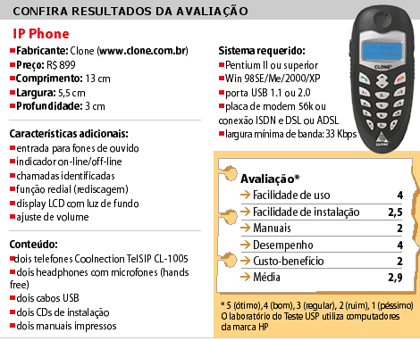

24/11/2004
-
10h18
Teste USP avalia IP Phone, que faz ligações usando o micro
DILVAN DE ABREU MOREIRA, AUGUSTO CARBOL LORZA e RICHARD SAMUEL LINGNEREspecial para a
Folha de S.PauloO
Teste USP avaliou o IP Phone, par de aparelhos da marca Clone que serve
para fazer telefonemas utilizando o computador (no sistema de voz sobre
IP, ou VoIP).
A utilização do IP Phone só é possível com a
instalação de um programa --que funciona somente no Windows e é
responsável pela conexão a um servidor central e pelo armazenamento de
contatos em uma agenda. O IP Phone utiliza uma rede baseada no
protocolo proprietário TelSIP, que é baseado no padrão aberto SIP
(Session Initiation Protocol).
O protocolo SIP é utilizado em
diversas redes de VoIP, entre as quais pode haver comunicação. A rede
TelSIP não se comunica com outras redes SIP e só pode ser acessada por
aparelhos similares ao IP Phone.
Isso quer dizer que, por
enquanto, não é possível efetuar uma ligação do IP Phone para telefones
de quaisquer outras redes. Também não é possível usar o aparelho em
intranets (redes privadas) sem acesso à internet, pois ele precisa se
conectar a um servidor TelSIP para operar.
InstalaçãoO
grau de dificuldade para instalação e correto funcionamento do IP Phone
varia de acordo com as configurações de rede local e internet, podendo
ser extremamente fácil ou requerer a intervenção de um usuário mais
familiarizado com o Windows e com configurações de redes.
Logo
após a instalação em alguns computadores, o dispositivo padrão de som
do Windows foi configurado para ser o IP Phone (todos os sons do
computador passaram a ser reproduzidos pelo acessório). Para ter de
volta o som nos alto-falantes, vá a Meu computador/Painel de
Controle/Som, Multimídia e Áudio, escolha a opção Som e restabeleça a
placa de som do seu computador nas opções Gravação e Reprodução.
A
versão do programa TelSIP que vem junto com o produto não é a última.
Após a instalação, o software pergunta se o usuário deseja atualizá-lo
para uma versão mais nova.
Nos testes efetuados, ter a última
versão do programa instalada nos dois computadores foi importante para
o correto funcionamento do IP Phone. A última versão (2.1.2) do TelSIP
não detecta a conexão à internet. Quer dizer: se o programa for
carregado antes de a conexão estar funcionando, o usuário tem de
reiniciá-lo.
DesempenhoA qualidade do som durante
as ligações é satisfatória. Fones de ouvido com microfones externos
acompanham os aparelhos, mas a qualidade deles é baixa e prejudica a
clareza das conversas.
Comparando o IP Phone com o
Skype, popular programa de voz sobre IP, o primeiro não apresenta vantagens e perde em muitos pontos.
| Editoria de Arte/Folha Online |
|  |
Apesar
de o Skype operar com protocolo proprietário, o seu uso é gratuito e
não exige a utilização de nenhum aparelho além do microfone e dos fones
de ouvido (ou caixas de som) do computador em que estiver instalado.
O
Skype apresenta como vantagens criptografia do som, conferência com até
cinco pessoas, ligação para telefones de qualquer parte do mundo com
tarifas reduzidas, compatibilidade com quatro sistemas operacionais
(Windows, Linux, Mac OS X e Pocket PC), conexão ponto a ponto (peer to
peer, ou P2P) e maior facilidade de instalação e operação em redes
protegidas por firewalls.
Uma vantagem do IP Phone é sua
facilidade de uso, decorrente da sua semelhança com aparelhos de
telefone convencionais. É possível comprar um telefone convencional
para o Skype (um USB phone) mas ele custaria cerca de US$ 60 (já com
frete).
No IP Phone, boa parte do processamento da voz é feito
no hardware do próprio telefone. Em soft phones (softwares que simulam
telefones), como o Skype, essa tarefa é realizada pelo processador do
computador utilizado. Assim, micros mais antigos podem trabalhar melhor
com o IP Phone.
Consumo de bandaO IP Phone gera
um tráfego máximo na rede de 14,5 Mbytes/hora, tendo como base de
cálculo a velocidade de 33 Kbps (kilobits por segundo), equivalente a
uma conexão lenta de modem.
Assim, utilizá-lo por cinco horas
diárias poderá gerar um consumo mensal de banda de cerca de 2,12
Gbytes. Atualmente, em conexões de banda larga que têm limitação de
tráfego, o uso do IP Phone pode gerar gastos adicionais.
Características físicasO
IP Phone se destaca por ser leve, possuir teclas macias, ter formato
anatômico, ser robusto e apresentar display de cristal líquido com
iluminação. Entretanto, deixa um pouco a desejar no quesito acabamento,
apresentando algumas imperfeições.
O cabo USB que acompanha o IP
Phone possui cerca de 1,5 metro, podendo ser curto demais para o uso em
computadores que não apresentem conectores USB na parte frontal do
gabinete.
ManuaisOs manuais contêm algumas
falhas, mas informações adicionais podem ser obtidas no site da Clone.
O programa TelSIP e as informações exibidas no display do IP Phone
estão em inglês, mas por serem informações simples, não atrapalham o
uso do produto.
As melhores informações para contornar problemas
relacionados com a conexão à internet foram encontradas na página da
Clone (distribuidora do produto no Brasil), enquanto a solução para o
inconveniente da configuração de som foi encontrada na seção "problemas
e respostas" do manual impresso.
ConclusãoDestinado
a quem deseja diminuir despesas com telefonia e que não abrem mão da
comodidade de um aparelho telefônico convencional, o Clone IP Phone
cumpre bem as suas tarefas, desde que não se queira falar com telefones
externos à rede TelSIP. Embora sua utilização não apresente obstáculos
relevantes, a instalação pode exigir alguém com experiência nesse tipo
de tarefa.
Dilvan Moreira é doutor em
engenharia eletrônica e orienta alunos no programa de pós-graduação do
ICMC-USP. Augusto Carbol Lorza é bacharel em informática pelo ICMC-USP.
Richard Samuel Lingner é estudante de bacharelado em informática no
ICMC-USP.Especial
Leia outros testes feitos pela USP